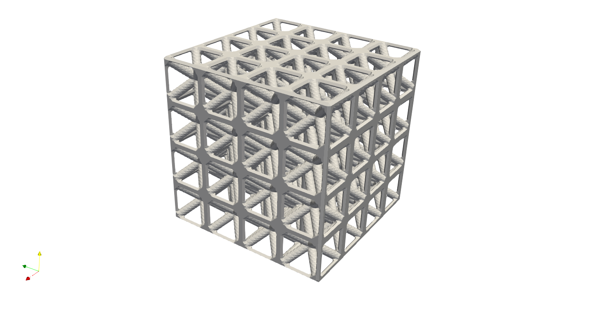

Fill a box#
Assuming we would like to fill a box geometry with Cubic lattice, the input JSON shall be like this:
{"Setup":{ "Type" : "Sample",
"Sample": {"Domain" : [[0.0,4.0],[0.0,4.0],[0.0,4.0]], "Shape": "Box"},
"Geomfile": "",
"Rot" : [0.0,0.0,0.0],
"res":[0.05,0.05,0.05],
"Padding": 1,
"onGPU": false,
"memorylimit": 1073741824000
},
"WorkFlow":{
"1":{"Add_Lattice":{
"la_name": "BCCubic", "size": [1.0,1.0,1.0], "thk":0.1, "Rot":[0.0, 0.0, 0.0], "Trans":[0.0, 0.0, 0.0],
"Inv": false, "Fill": true, "Cube_Request": {}
}},
"2":{"Export": {"outfile": ".//Test_results/Test_Sample_Strut_Infill.stl"}}
},
"PostProcess":{"CombineMeshes": true,
"RemovePartitionMeshFile": false,
"RemoveIsolatedParts": false,
"ExportLazPts": false}
}
- The JSON contains three sections,
Setup, setup the general computational domain (an 3D block that computes everything) and other essential required computing quantities such as resolution (keywordsres). The domain was defined in a block from(0.0,0.0,0.0)to(4.0, 4.0, 4.0)- a solid cube with length of 4 mm.WorkFlowdefines the how the resultant lattices built, e.g. connection between two different lattice fields etc.. The single step of lattice operation is defined by numeric index keywords, such as"1","2"etc.. In the step"1", we added a BCCubic lattice with 1 mm in x, y and z direction, and the radius of the beam was 0.1 mm. In the step"2", the results saved in the file".//Test_results/Test_Sample_Strut_Infill.stl".PostProcessimplements simple post processes on the resultant geometries. In this example, we would only combine the meshes if the automatic partitions were made.
Save the JSON as Sample_box.json, and type
python ArtisanMain.pt -f .//Test_json//Sample_box.json
You should see the results stl file at the folder Test_results, and launch the paraview, loads the file, you should be able to see the following.
A few output files were also generated. Under the folder which contains the input JSON file, you should find the following:
“Sample_box.log”, a log file containing inputs and execution information.
“Sample_box.prg”, this is a file regularly updated during the computing procedure, it informs the current progress of percentage of job completion.
In the destination folder, you will see:
the results file, e.g. “Test_Sample_Strut_Infill.stl”, and
the partitioned mesh file “Test_Sample_Strut_Infill_000000.stl”. In this case, the partition was not triggered and only one mesh file was produced.